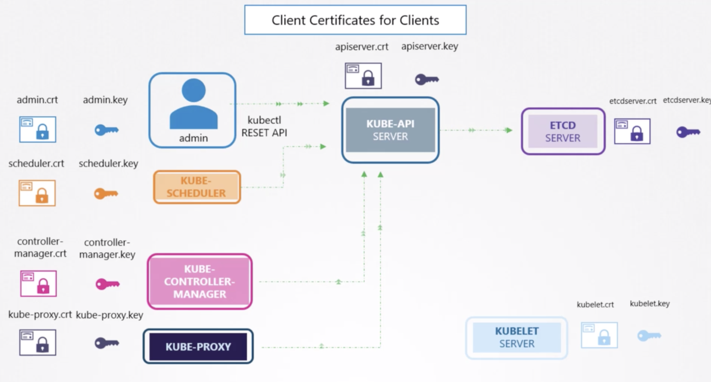

[K8s] Kube-apiserver 工作流程 | How does api-flow work?
Status: in 75%
什麼是 Kube-apiserver？

Core Components of K8s
kube-apiserver 是 Kubernetes 最重要的核心組件之一，它的位置在master node裡面
主要功能就是提供cluster管理
REST API ：包括
認證授權、數據校驗以及集群狀態變更等通信樞紐 ：提供其他Components之間的資料交互和通信的樞紐
樞紐指的是：其他Components，包括worker kublet, kube-proxy 與 master node等等，可以通過 API Server 查詢或修改數據
這邊要注意一個重點就是，只有 API Server 才
直接操作 etcd
有沒有注意到只有kube-apiserver有畫線到etcd
以Client Certificates 檢視
實例說明：以建立一個nginx為例

APIServer: 是專門負責接收kubectl送出來的命令，
比如：我們通過kubectl 通過APIServe r告訴它，我們要創建一個service/pod$kubectl apply -f ngnix-service.ymlAPIServer 接收到命令後，會把
指令和參數存在etcd裡面- kubelet 是管理 pod，也就是管理container創建跟刪除
- kube-proxy 主要是用來管理網路，它會透過iptables(灰色)去創立policy
來確保service可以向外溝通
完整的過程即是kubelet 和 kube-proxy會一直
監聽etcd裡面有什麼改變， 若發現有新的指令(指上面kubectl apply)，它就知道有新的service/pod 要創建，就會在相應的node上建立service/pod -- k8s-node1 長出
pod(紫色) - 同時也因應網路的需求建立
iptables(灰色)
- k8s-node1 長出